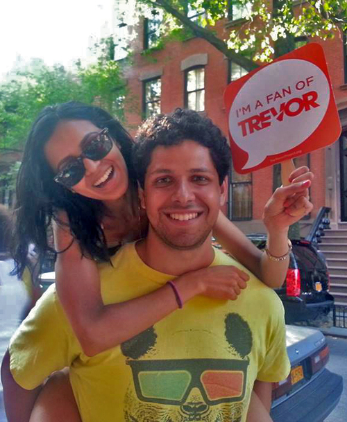

Trevor Lazarus is a data-focused designer with a passion for consumer trends and behavior. Born in Texas, educated in Chicago, and now paying rent in Brooklyn; his unique experience allows him to meaningfully convey large data sets to the public at large.
He likes running, cheeses of all kinds, and probiotic hot sauce.

RESUME
Experience
I recently graduated from a Front-End Web Development course at General Assembly where I learned HTML, CSS, JavaScript, jQuery and how to be an awesome Front-End Web Developer! I am hoping to use this knowledge to build upon my design portfolio.
Job Descriptions
Digital Designer, Time Inc 2015 - present
- Create mock-ups to support sales team in acquiring media purchases from advertisers
- Custom design digital and print products that align clients' campaigns with Time Inc. brands' editorial content
- Refine the catalog of digital products, in both style and user experience, offered to clients
- Generate concepts and copy for advertorial content
Senior Designer, Sports Illustrated 2011 - 2015
- Managed three person team that designed all department pages within a 72-hour deadline
- Increased magazine’s page efficiency and accessibility by converting majority of content from
written stories to infographic visualizations via illustrations, charts, and interactive graphics
- Implemented procedure that reduced print-to-digital product turnaround time by 20%
- Cultivated relationships with multiple stakeholders to keep page production under budget
- Built and refined layouts for featured packages, SI Swimsuit issues, and SI Presents commemorative releases, including their digital translations
EDUCATION
- General Assembly / Front-End Web Development
- Northwestern University / B.S. in Journalism
- Memorial High School / High School Diploma